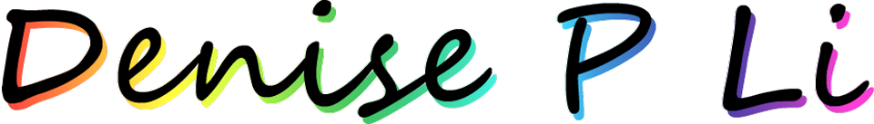

ABOUT ME

Hi! I'm Denise. I make nice things for nice people!
I was an environmental scientist for about 5 years for the City of Los Angeles. Before that, I researched large mammal behavior in the Kalahari Desert, tutored middle and high school students in math and science, collected vital fisheries data aboard commercial fishing vessels in the Bering Sea (think Deadlist Catch), and researched impacted waterways in the Sacramento-San Joaquin River Delta in California. Now I'm in Indianapolis, IN with my two cats and looking for new opportunities and collaborations!My background is very science-heavy. I've always been interested in arts and crafts but that interest was always secondary to my scientific pursuits. It wasn't until recently that I have been able to pursue my creative interests. For my wedding in March 2019, I made all of the lettering and stationery. That's when I realized that I really wanted to pivot and contribute to society in a different way. I've worked with some pretty amazing people but I'm ready to focus less on environmental health and more on creative endeavors.
In my free time, I like taking my cat, Butterball, on adventures and cuddling with my shyer cat, Wiggles. I love to ride my bike and go to the gym. I also play Overwatch on PC (durrneez#1358). Add me up if you want to play!
ABOUT MY WORK
For bespoke items, I work with watercolor, brush pens, and acrylic typically on paper media (cardstock or watercolor paper). I use Czar Press for printing. No project is too small!